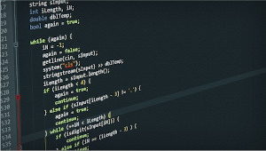

Variables, Types and Strings
We will already be familiar with the concept of a variable (see: Variables in Python). It is It is a container, or a label, used to store data in our programs.
Examples of variables might include:
- age = 42
- answer = 'Y'
- full_name = 'Harry Jones'
- is_over_age = True
- area_of_circle = 3.142 * radius^2
A variable consists of an identifier, it's name and can be assigned a value. This value might change during the course of the program.
AQA Pseudocode
Note
For assignment AQA uses the backward pointing arrow - it's a sensible choice
OCR Pseudocode
Data Types
All programming languages need to handle data, and that data can take different forms. Consider the examples above. What type of data is being assigned to each of these variables? Is it numeric? Is it text? If it's a number, is it a whole number of a number with a fractional part?
Every item of data needs to be stored in the computer's memory. How much memory is going to allocated to each of these variables? How does the operating system determine this and set aside the right amount of memory?
The answers here may depend on whether we are programming using a statically-typed language or dynamically-typed language. The different between these:
- Statically-typed: The amount of memory will be known when the code is compiled into an executable
- Dynamically-typed: The amount of memory will be allocated while the program is running
For statically typed languages the amount of memory is effectively built-in and we, the programmer, cannot change it. A typical summary is shown in the following table:
| Data Type | Expected Type of Data | Typical amount of memory | Example |
|---|---|---|---|
| integer | Whole number, positive or negative | 4 bytes | 42, -89, 0 |
| float/real | Number with a fractional part | 8 bytes | 3.142, -89.7 |
| char | Individual character | 1 byte | 'a', '9', 'Z', ';' |
| string | Zero or more characters | 1 byte per character in the string | 'John', '1234' |
| boolean | True or False | 1 byte | True, False |
Note
Different languages might be set up to use different amounts of memory
For dynamically typed languages the amount of memory allocated to a variable is determined at run-time. So, if the program encounters the assignment: age = 42 a 4-byte block of memory will be allocated and labelled as age. If later in the program the user decides (and I'm not sure why they might do this) to change the value assigned to age to be age = "forty two" then the operating system would need to allocate 10 bytes of memory.
Whichever type of language we are dealing with the type of data being handled by a variable is an important consideration. It can lead to some issues:
- An integer occupies 4 bytes, 32 bits
- These 32 bits provide an allowable range of -2,147,483,648 through to 2,147,483,647
- What if you want to store a value higher or lower than this?
You can't! Well, if you know in advance this might be possible than you will have to use another integer data type provided by the language (not listed in the table above).
- Also, if we're only dealing with values between, say, 1 and 100, we're wasting three bytes of memory for each of these values!
A valid consideration. Again use an alternative data type. For example C# provides both Int16 and Int32, the first uses 16 bits, the second 32 bits.
The point is, data is important, the data type of that data is also important to us programmers. Select the correct data type wisely.
Constants
As well as variables we can declare and assign constants. As the name suggests, the value assigned to a constant can not be changed.
In this regard Python misbehaves. It does not endorse constants in the same way other languages do. it is perfectly possible in Python to declare a value for PI = 31,42, and then later in the program change that value to something completely different. This is not good practice.
Other languages may expect, when you declare a constant, to preface it with the keyword const:
const PI = 3.142const VAT_RATE = 0.2
Any attempt then to change these values will lead to a syntax error. This is good practice.
Note
It is good practice to use upper case letters for the names of constants, whether in Python or not. It serves as a reminder that the value we're dealing can not (should not) be changed.
The benefits of a constant are:
- The value cannot be changed accidentally during the course of a program
- Defining the constant once, usually at the start of a program, means any subsequent updates e.g. the chancellor changes the rate of VAT, are only done in one place
AQA Pseudocode
OCR Pseudocode
OCR make no distinction in their pseudocode between variables and constants
Tip
For OCR always upper case the identifier to make it clear it is a constant
Input/Output
All languages need some way of communication with their user, either by getting the user to enter data at the keyboard or to display results to the screen or to a file or to a printer etc..
Each will have their own way of doing this, classically:
- The function
inputwaits for the user to type something, then assigns that to the variablename. - The function
print()sends whatever is included in the brackets to the screen
Note
If the brackets are empty, as in print(), a new line character is sent and the cursor will move down by one line on the screen
AQA Pseudocode
Somewhat unusual perhaps ...
OCR Pseudocode
Nothing to surprise us here.
Operators
| Operator | Description | Example | Result |
|---|---|---|---|
| + | Addition | 7 + 3 |
10 |
| - | Subtraction | 7 - 3 |
4 |
| - | Multiplication | 7 * 3 |
21 |
| / | Division | 7 / 3 |
2.33333.. |
| ^ | Exponentiation | 7 ^ 3 |
343 |
Note
When two integers are divided, the result is a real (floating point number)
There is also a pair of integer division operators:
| Operator | Description | Example | Result |
|---|---|---|---|
| DIV | Floor division | 7 // 3 |
2 |
| MOD | Modulo (Remainder) | 7 % 3 |
1 |
Note
Both AQA and OCR pseudocode uses the mnemonic MOD and DIV for integer division operations, equivalent to // and % in Python
Strings
A string is different to an integer. Perhaps obvious, but consider:
- the string '42' is represented in binary as \(0111010101110011_2\),
- the integer 42 is represented in binary as \(00101010_2\).
Everything the user enters at the keyboard will be received by the computer as a character, or string if more than one character is entered.
To convert string data into numeric data, and vice versa, we use one of several built-in functions:
AQA Pseudocode
| Function | Description |
|---|---|
| STRING_TO_INT(str) | converts the string, str to an integer |
| STRING_TO_REAL(str) | converts the string, str to a float/real |
| INT_TO_STRING(num) | converts the numeric value, 'num' to a string |
| REAL_TO_STRING(num) | converts the numeric value, 'num' to a string |
| CHAR_TO_CODE(ch) | converts the character, ch to its ASCII value |
| CODE_TO_CHAR(num) | converts the integer, num, to its associated ASCII character |
OCR Pseudocode
| Function | Description |
|---|---|
| int(str) | converts the string, str to an integer |
| float(str) | converts the string, str to a float/real |
| str(num) | converts the numeric value, 'num' to a string |
String concatenation
Two strings can be joined together using the concatenation operator, +:
full_name = first_name + ' ' + last_nameage = '4' + '2'
String functions
There are a number of standard functions for working with strings. These functions will be made available in most programming languages. If you know you want to find the length of a string using, say, C# or Java then a quick search on the Internet will yield the answer (yes, we all do that!)
| Function | Description | Example | Output |
|---|---|---|---|
str.length |
returns the length of the string, str |
n = 'john'.length |
4 |
str.substring(start, end) |
returns a slice of the string, str, |
print('john',substring(0,2)) |
'jo' |
str.left(3) |
returns the first 3 characters of the string, str |
print('john'.left(1)) |
'j' |
str.right(3) |
returns the last 3 characters of the string, str |
print('john'.left(1)) |
'ohn' |
str.upper() |
Convert the string, str to upper case |
print('john'.upper()) |
'JOHN' |
str.lower() |
Convert the string, str to lower cacse |
print('John.lower()) |
'john' |
AQA Pseudocode
AQA alters the syntax of some of these string handling functions:
| Function | Description | Example | Output |
|---|---|---|---|
LEN(str) |
returns the length of the string, str |
n = LEN('john') |
4 |
SUBSTRING(start, stop, str) |
returns a slice of the string, str, |
print(SUBSTRING(0,2,'john')) |
'jo' |
You should not expect to see any of the others in the AQA pseudocode.
OCR Pseudocode
Both length and substring are used in OCR and the syntax is:
| Function | Description | Example | Output |
|---|---|---|---|
str.length |
returns the length of the string, str |
n = 'john'.length |
4 |
str.substring(start, num) |
returns a slice of the string, str, num indicates how many characters |
print('john',substring(0,2)) |
'jo' |
Comments
Any lines in your code that begin with the comment indicator are ignored when the program is compiled and/or executed.
Get into the habit of including comments in your code, they are really useful. All programs should contains comments:
- to describe the purpose of the program
- include your name and date of the author and when the program was written
- include a revision history, what changes were made and when
AQA Pseudocode
Adopts the Python comment: #
OCR Pseudocode
Uses // as in languages such as Javascript etc..